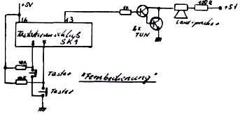
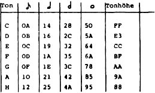

Nascom Journal |
6/80 7/80 |
Dieses Telespiel bildet auf der rechten Hälfte des Bildschirms eine „Mauer“ von Klötzchen ab, von denen sich nach einem Zufallsprogramm jeweils eines löst, sich nach links bewegt und mit einem „Schläger“ abgeschossen werden soll. Ein Zähler zählt dabei bei Treffern aufwärts, bei Fehlschlägen abwärts. Erreicht der Zähler Null, ist das Spiel verloren, wobei ein Trauermarsch ertönt, erreicht er zehn, erklingt ein Tusch, und das Spiel wird als gewonnen angezeigt. Treffer und Fehlschlüge werden ebenfalls hörbar gemacht, auch das Berühren des oberen oder unteren Bildrandes durch den Schläger erzeugt ein unterschiedliches akustisches Signal. Am Ende des Spiels kann ein neues Spiel mit veränderter Geschwindigkeit gewählt werden.
Die Tonerzeugung erfolgt über ein Interface, wie z.B. in Heft 0 des Nascom-JournalS, wobei allerdings Bit 2 vom Port 0 verwendet wird (d.h. Pin 13 des Tastaturanschlusses). Die Bewegung des Schlägers erfolgt über eine einfache Fernbedienung, die ebenfalls am Tastaturanschluss abgezapft wird. (Siehe Zeichnung)
Man startet das Spiel bei 0D30. Am Ende kann durch Drücken der Zifferntasten eine neue Geschwindigkeit eingegeben werden, wobei 1 die schnellste, z.B. 4 eine sehr langsame Geschwindigkeit ergibt. Ein neues Spiel wird durch Drücken der NEW LINE – Taste gestartet.
Die Übersicht gibt in Hex. die Werte an, die Sie zur Erzeugung der tiefsten Oktave benötigen. Die höheren Oktaven ergeben sich durch jeweiliges Halbieren der Werte. Beispiel: C = FF, c = 80, c’ = 40, c” = 20 etc.
Daneben finden Sie die Werte für die zugehörige Tonlänge, umgerechnet in vier verschiedene Notenwerte. (Leider benötigt jede Tonhöhe einen anderen Faktor, was die Melodienprogrammierung etwas umständlich macht).
Es lassen sich auch Zwischentöne programmieren. Diese Werte können Sie z.T. experimentell selbst ermitteln
Günter Böhm, _________________ ____
__ Karlsruhe __
Tel.: ____/______
der mensch steht im mittelpunkt,
und somit allem im wege.
wo wir sind klappt nichts —
aber wir koennen auch nicht ueberall sein.
wir wissen zwar nicht, was wir wollen —
aber das mit ganzer kraft.
jeder macht was er will —
keiner macht was er soll —
aber alle machen mit.
| Seite 18 von 52 |
|---|